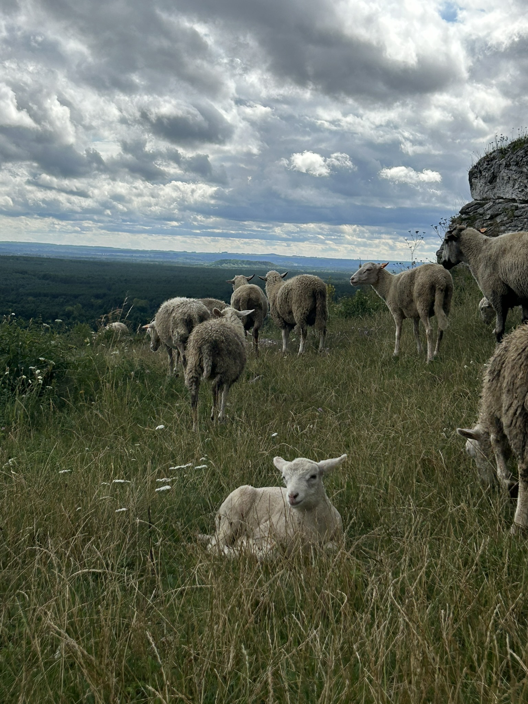
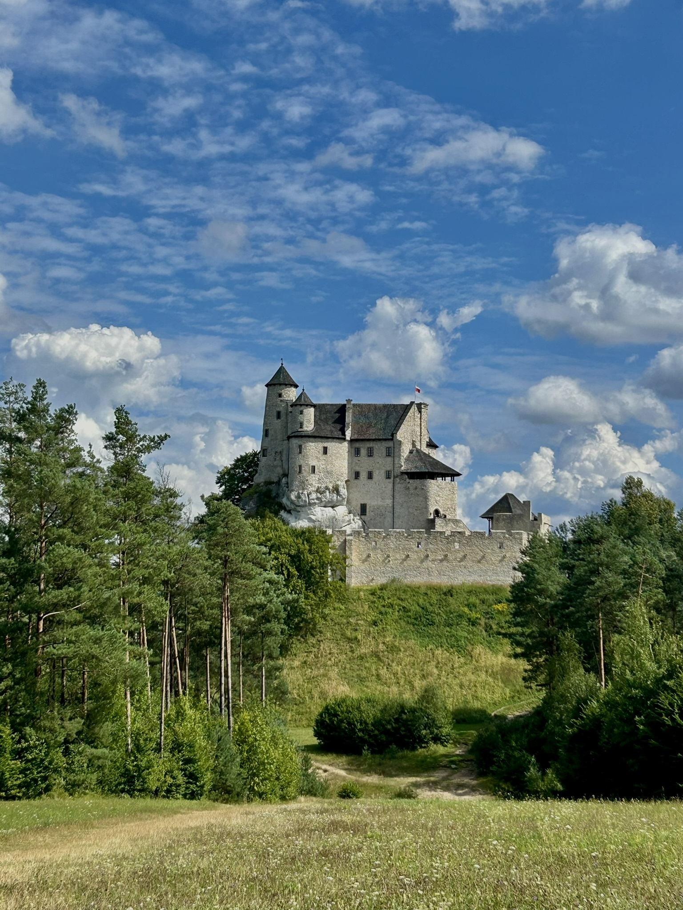

Pan Twardowski to bohater jednej z najbardziej znanych polskich legend: krakowski szlachcic,
który w zamian za wielką wiedzę i znajomość magii zaprzedał duszę diabłu.
Sprytnie zastrzegł w cyrografie, że czart może go zabrać do piekła tylko w Rzymie – i omijał Wieczne Miasto szerokim łukiem.
Diabeł dopadł go w końcu w karczmie o nazwie „Rzym”, ale porwany Twardowski zaczął się modlić i wymknął się z diabelskich szponów.
Wylądował na Księżycu, skąd podobno do dziś przygląda się ludziom.
Na Jurze ta opowieść zapuściła korzenie w dolinie Wiercicy.
Według miejscowej legendy odciski widoczne na wapiennym moście skalnym koło Złotego Potoku zostawił diabelski kogut,
który właśnie stąd wystartował z Twardowskim ku Księżycowi. Skałę ochrzcił Bramą Twardowskiego poeta Zygmunt Krasiński,
częsty gość tutejszych lasów.
Inne podanie obiecuje, że panna, która przejdzie przez skalny otwór, wkrótce będzie miała szansę stanąć na ślubnym kobiercu.
Niecały kilometr dalej stoją Diabelskie Mosty.
Legenda mówi, że diabeł, wypatrując Twardowskiego na Księżycu,
wpadł w szczelinę między skałami i utknął – więc na przyszłość przerzucił nad nimi kładki.
W rzeczywistości pomosty kazał zbudować Krasiński, a przetrwały do lat 60. XX w. Twardowski pojawia się też
w Pieskowej Skale: według jednej z legend to diabeł na jego polecenie przeniósł
do doliny Prądnika ogromną skałę – dzisiejszą Maczugę Herkulesa.

Autor zdjęć: Gabriela Wróbel
Legenda o Panie Twardowskim
Tekst o Jurze
Informacje o Wyżynie Krakowsko-Częstochowsiej